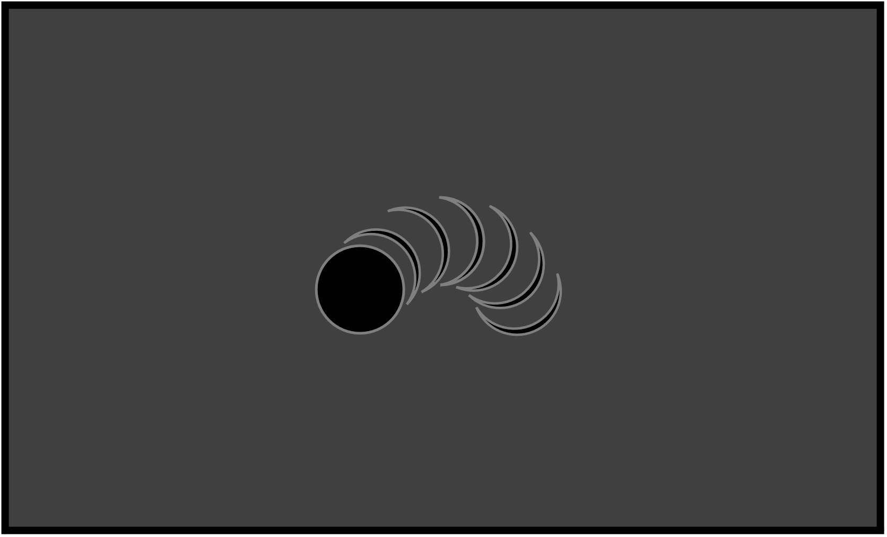
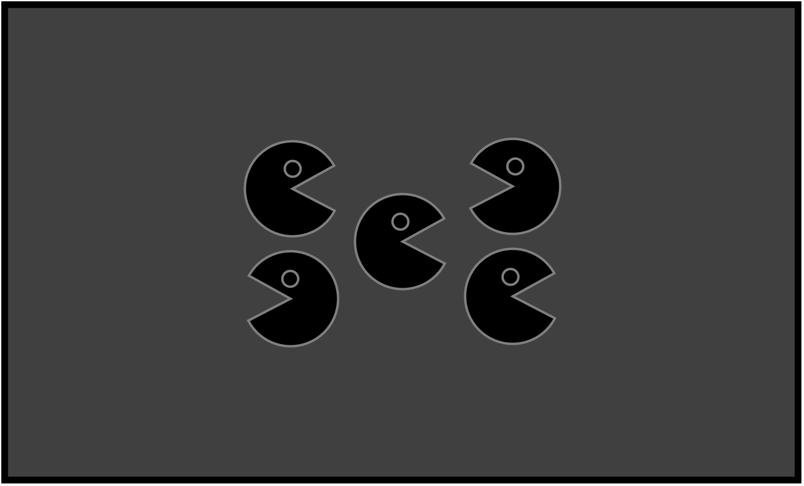
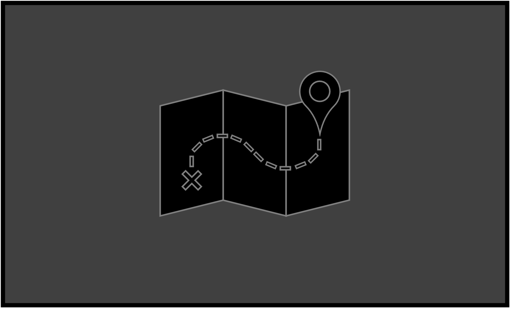
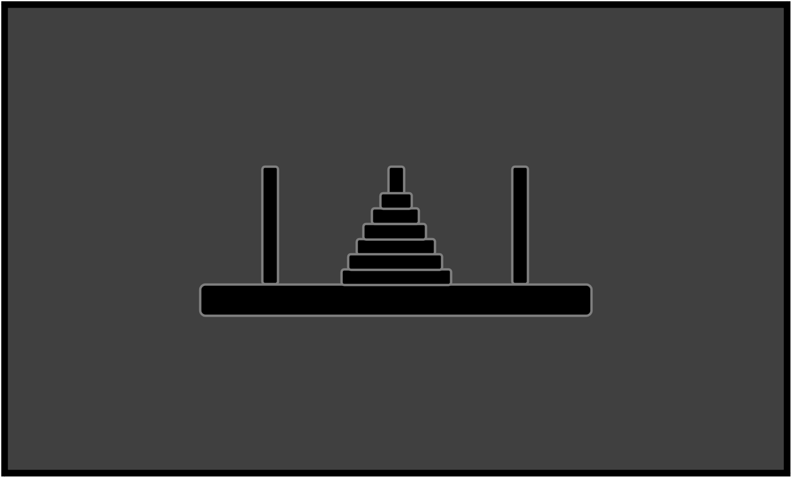
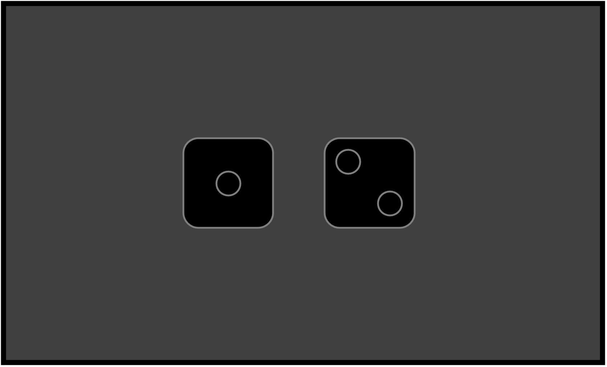

Welcome to my projects page! Below find some of my featured projects.

Ball Project
Ball Interactive Animation

Pac-Man Project
Pac-Man Interactive Animation

Map Project
Map Simulation Showing Real-Time Tracking Updates For Bus Route

Eyes Project
Eyes Interactive Animation Tracking Cursor Movement On The Screen

Tower Of Hanoi Project
Tower Of Hanoi Puzzle Interactive Animation

Dice Project
Dice Simulation For Randomizing Dice Rolls